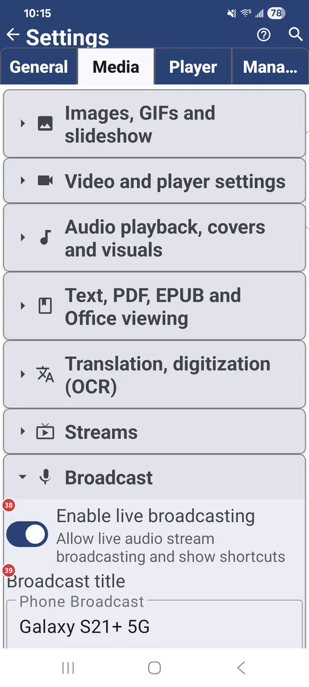
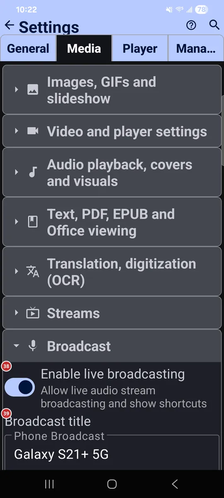

Settings: Media
What this is for
Media is where you decide which kinds of files the app handles and how each kind behaves: images, video, audio, documents, translation, streams and live broadcasting.


In this order
There is no fixed order here - every option works on its own. The tab folds into groups, one per kind of media, and each group lists its options below. Some groups, such as Streams and Broadcast, show up only in editions that include them.
The elements
Images, GIFs and slideshow
1Support static imagesLets the app view static images.
JPG, PNG, WEBP, HEIC and other image formats become viewable. Turn it off if you never use the app for pictures.
2Support GIF animationPlays animated GIFs in the file browser and player.
Turn it on to see GIFs move. The same page also sets size limits for images and animations.
3Load images at full resolutionLoads original-resolution images so you can zoom in.
It enables pinch-to-zoom and rotation gestures in command panel mode, but uses more data and memory. By default the app loads images at 1920 px; over the network, the original is downloaded for zooming, which is slower.
4Crop images to fill screenFills the whole screen when image and device orientation match.
In fullscreen and slideshow, a landscape image on a landscape screen (or portrait on portrait) is cropped to fill it. With the option off, every image fits inside the screen without cropping.
5Dynamic Background ExtensionFills the empty bars around an image with its own edge colors.
It softens letterboxing and pillarboxing when an image does not match the screen shape. Plain backgrounds get a uniform fill; busier ones get streaks that continue the picture.
6Play music during slideshowPlays music while a slideshow runs.
Tracks from the resource you choose play in random order during image and GIF slideshows. Pick a resource that holds your music; the picker appears when the option is on.
7Set as default image viewerMakes FastMediaSorter the app that opens your images.
Android shows its own dialog: pick FastMediaSorter and tap Always. This is not permanent - Android keeps the choice in its own settings, and you can change it back there.
Video and player settings
8Support videoLets the app play video.
MP4, MKV, MOV, WEBM and other video formats become playable in the built-in player.
9Show video thumbnailsShows a preview frame for each video in the file browser.
The first frame of the video becomes its thumbnail. For network files it can take two seconds or more, because the file has to be downloaded and processed first.
10Open video files in fullscreen modeStarts videos from the file browser in fullscreen.
A video you open from the file browser goes straight into fullscreen playback.
11Save video frames to clipboardAlso copies each extracted video frame to the clipboard.
When you extract a frame from a video, it also goes to the clipboard, ready to paste.
12Set as default video playerMakes FastMediaSorter the app that plays your videos.
Android shows its own dialog: pick FastMediaSorter and tap Always. This is not permanent - Android keeps the choice in its own settings, and you can change it back there.
Audio playback, covers and visuals
13Support audioLets the app play audio.
MP3, FLAC, AAC, OGG and other audio formats become playable.
14Search audio covers onlineLooks online for covers of tracks that have none embedded.
Covers are downloaded from the internet. A Search only on Wi-Fi option appears next to it, so mobile data stays untouched.
15Show random photos during audio playbackShows random photos while audio plays.
Photos come from the resource you pick, one random photo per song. Only still images are used; videos are ignored.
16Visualizer when no cover artChooses what the player shows for a track without cover art.
Pick a plain black background, a music note with pulse rings, breathing bars, waves and particles, or a visualization video.
17Set as default audio playerMakes FastMediaSorter the app that plays your music.
Android shows its own dialog: pick FastMediaSorter and tap Always. This is not permanent - Android keeps the choice in its own settings, and you can change it back there.
Text, PDF, EPUB and Office viewing
18Support text files (.txt, .md, .log, .json, .xml)Lets the app open plain text files.
That covers .txt, .md, .log, .json and .xml files.
19Support PDF documentsOpens PDF files in the built-in viewer.
There is also a separate option for large PDF thumbnails; it is slower.
20Support EPUB e-booksReads EPUB e-books.
The reader has bookmarks and a table of contents.
21Support Office documentsOpens Office documents with another app.
DOC, DOCX, RTF and ODT open in an external app, not in FastMediaSorter itself.
22Set as default document viewerMakes FastMediaSorter the app that opens your documents.
Android shows its own dialog: pick FastMediaSorter and tap Always. This is not permanent - Android keeps the choice in its own settings, and you can change it back there.
Translation, digitization (OCR)
23Enable text recognitionTurns on text recognition for images and PDFs.
Text is extracted so you can copy it. The font size and font family for the recognized text are set just below.
24Enable TranslationTurns on translation of text recognized in images.
The visible text is translated from the original language into the one you choose below. Translation packs can be installed from the downloads row.
25Original LanguageChooses the language of the text you want to translate.
The swap button between the two language fields flips them in one tap.
26Translate ToChooses the language to translate into.
Translations appear in this language. When you need the other direction, swap the two languages with the button between them.
27OCR & translation downloadsOpens the downloads for text recognition and translation.
Install the OCR and translation packs you need, and remove them again to free space.
Streams
28Enable StreamsTurns on internet audio, video and RTSP streams.
Streams add a channel catalog and playback for online radio and television. The options below tune how they behave.
29Default orderChooses the default order of the channel list.
Order by name, topic, language, country or recently added.
30Show by defaultChooses which channels show by default.
All channels, only audio, or only video.
31Updating the channel listDecides when the channel list gets updated.
Choose between updating only when you ask, a suggestion when you open Streams, or automatic updates on Wi-Fi.
32Audio language for streamsPicks the audio language streams start with.
Choose Default, English, Russian or Ukrainian.
33Subtitle language for streamsPicks the subtitle language streams start with.
Choose Default, English, Russian or Ukrainian.
34Ultra-smart stream bufferingGives streams a bigger start-up cushion.
Streams start with a bigger buffer and reconnect quietly when the connection is shaky.
35Play casts at onceStarts a cast from another device without asking.
Normally a cast your other device sends here waits for you to accept it. With this on, it starts playing right away.
36Enable Picture-in-PictureAdds a Picture-in-Picture button to the player.
The player also enters Picture-in-Picture on its own when you press Home (Android 12 and newer).
37Clear play marksClears the green and red play marks on all channels.
The channels themselves stay. The app asks you to confirm first.
- Undo
- Only the marks are removed; the channels stay where they are.
Broadcast
38Enable live broadcastingAllows live audio broadcasting from this device.
With it on, broadcast shortcuts appear in the app. The options below set the title, port, sound quality and microphone behavior.
39Broadcast titleNames your broadcast.
This is the name your broadcast goes by. The default is Phone Broadcast.
40PortSets the network port for the broadcast.
The app accepts ports from 1 to 65535. Change it only if you have a reason, for example another app that already uses the current port.
41Bit rateSets the sound quality of the broadcast.
Choose 128, 192, 256 or 320 kbps. Higher means better sound and more data.
42Audio formatSets the sample rate and the number of channels.
Choose 44.1 or 48 kHz, in mono or stereo.
43Microphone gainSets how loud your microphone is in the broadcast.
Choose from 50% to 400%. 100% leaves the level unchanged.
44Feedback guardPrevents the squeal when a listener nearby plays the broadcast aloud.
It turns the microphone gain down when the broadcast is played aloud close to the microphone, so the sound cannot build up.
Reset
46Reset Media sectionReturns only this tab to its defaults.
Settings on the other tabs keep their values. The app asks you to confirm first.